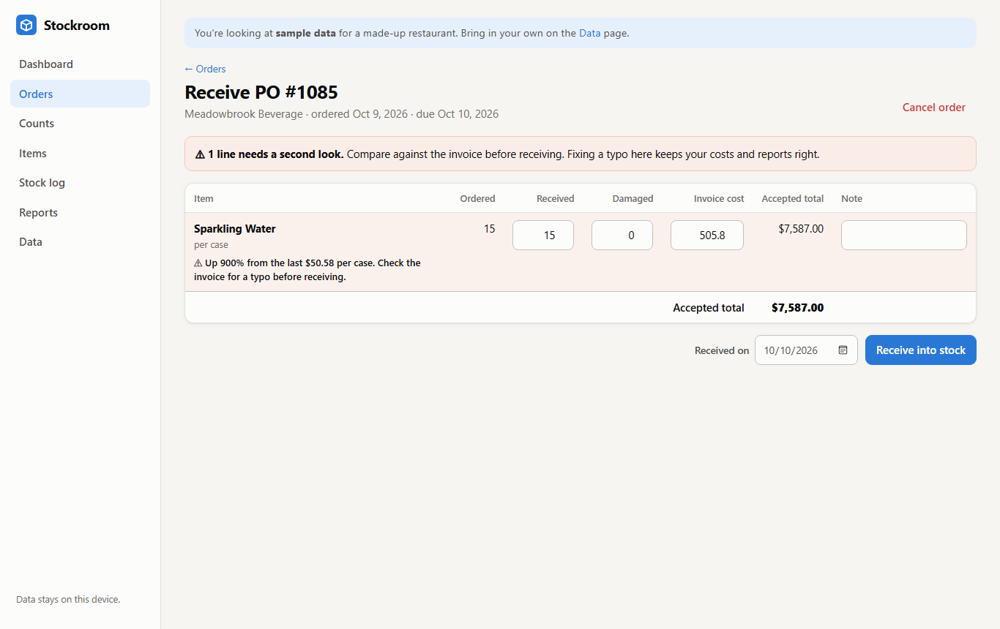
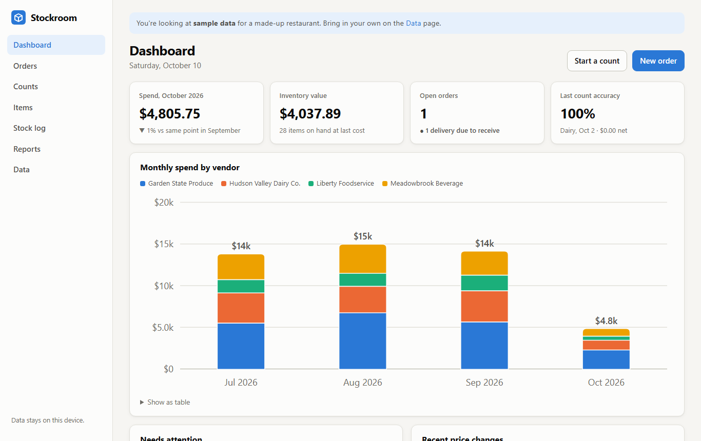

Inventory & Operations
Inventory manager with three years of high-volume operations experience: ordering, vendor coordination, stock rotation, and leading a 20-person team. I also built my own inventory control system, because I wanted one that catches mistakes before they reach the books.
Three years in fast-paced, high-volume restaurant operations, promoted from line cook to inventory manager, plus four years of service desk support and training.
Side project
After managing inventory in shared spreadsheets, I built the tool I wished I had. It's a working web app that runs in any browser, including on a phone in the stockroom.

Receiving catches a price typo before it reaches the books.

Dashboard: spend by vendor, inventory value, deliveries to receive, and count accuracy.
When I reviewed the shared spreadsheet we used to track orders and costs, I found problems that made the monthly numbers unreliable:
One delivery was entered with an extra digit ($404.85 a case instead of about $40), which overstated the month's purchasing by roughly $5,500.
The "price difference" formula showed the item's full price as a change whenever it wasn't ordered on one of the dates.
Prices were compared across different units (a case vs. a single item), so real price changes were hidden and fake ones appeared.
A line with a quantity and price but no total silently dropped out of the day's spending.
What I did about it: worked out the fixes (compare prices only within the same unit, only when both prices exist, and flag any line missing a total), then built Stockroom so these checks happen automatically when deliveries are received, not weeks later.
Open to inventory, operations, purchasing, and supervisor roles in New Jersey and New York City.